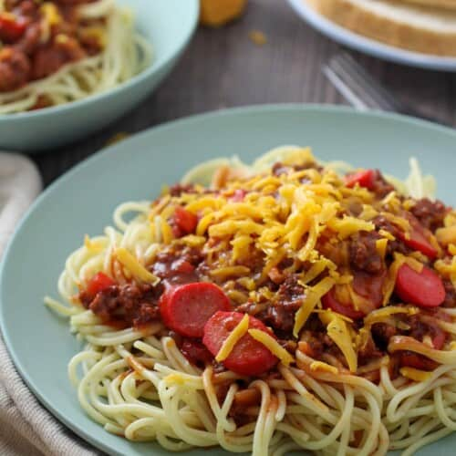

Spaghetti
Ingredients:
- Ground pork or beef.
- Banana Ketchup.
- Garlic
- Onions
- Bell Pepper
- Noodles
- Salt & Pepper
- Extra: Hotdog
- Extra: Cheddar Cheese
Directions:
- Step 1: Brown meat. Add Salt & Pepper. Set aside.
- Step 2: Saute chopped bell pepper, garlic and onions.
- Step 3: Boil noodles until soft. (Not al dente)
- Step 4: Add ground meat back in and the optional sliced hotdogs.
- Step 5: Add banana ketchup. Bring to a boil and let simmer for 15 minutes.
- Step 6: Serve over cooked noodles and add optional cheddar cheese.